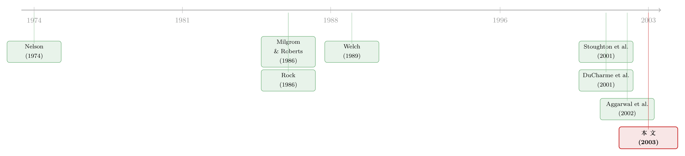

把「钱留在桌上」当成一笔广告费——新股折价的另一种算法
本文读的是 Demers & Lewellen (2003, Journal of Financial Economics)：他们用互联网公司上市后的网站流量作为产品市场表现的直接度量，发现 IPO 折价 (underpricing) 越深、上市后一个月网站访客增长越快，且效应在经济意义上不可忽视。换句话说，「把钱留在桌上」并不全是损失——其中有一部分，是换来的免费广告。
1 一笔看上去蠢得离谱的账
先看一组数字。从上世纪九十年代中期到 2000 年 2 月，美国共有 373 家互联网公司上市，募资超过 $26 billion；但与此同时，它们在上市首日「留在桌上的钱」（money left on the table）高达约 $27 billion——几乎和募到的钱一样多。再放大到全市场：1990 年至 2000 年 2 月，近 4,000 家非互联网公司 IPO，募资 $262 billion，桌上留下约 $38 billion。全样本平均（中位数）折价率是 23%（8%）。
所谓「留在桌上的钱」，定义很直白：
$$ \text{MONEY} = (\text{shares offered}) \times (\text{first-day closing price} - \text{offer price}) $$
也就是首日价格的涨幅，乘以卖出的股数。它衡量的是这样一件事：如果公司把发行价定得更接近首日收盘价，本可以多募到的那笔钱。对互联网公司而言，首日初始回报 (initial return) 的均值（中位数）是惊人的 82%（52%）——
$$ \text{IRET} = \frac{\text{closing price on the first trading day} - \text{offer price}}{\text{offer price}} $$
相比之下，非互联网科技股只有 24%（12%），传统行业更只有 10%（5%）。一家公司上市第一天股价翻了快一倍，听上去是股东的狂欢；可换个角度，这意味着承销商和发行人把发行价定低了一半，公司白白少拿了一大笔现金。
于是一个老问题摆在面前：发行人为什么甘愿留下这么大一笔钱？
2 旧答案，与一个被忽略的新答案
金融学对折价之谜已有一整柜的解释。首先是 Rock (1986) 的「赢家诅咒」(winner's curse)：知情与不知情投资者之间存在信息不对称，发行人必须折价，才能补偿被「逆向选择」吃亏的散户、把他们留在牌桌上。接着是 Benveniste and Spindt (1989)：折价是对机构投资者吐露私有信息的奖赏——你愿意在询价时说真话，我就让你在配售里占便宜。然后是 Welch (1989) 的信号理论：好公司故意折价，是为了向市场传递「我不怕亏这点钱」的自信。再往后还有 Loughran and Ritter (2002a) 用前景理论 (prospect theory) 解释为什么发行人对此并不上火。
这些解释有一个共同点：它们都把折价当成资本市场内部的一场博弈——发行人、承销商、投资者之间分钱的游戏。
但真正关键的一步在于，这篇论文把视线从资本市场挪到了产品市场。作者问的是一个几乎被所有人略过的问题：上市这件事本身、以及上市时的折价，会不会给公司带来营销上的好处？
这并非凭空设想。坊间的轶事早就在暗示了。写到网景 (Netscape) 那场著名的首发时，一篇典型的大众媒体报道说：「那场令人眩晕的网景 IPO，本身就成了一个营销工具，其价值不亚于它给公司带来的现金」（Kaplan, 1999, p. 250）。同样，Perkins and Perkins (1999) 记录的雅虎 IPO 定价讨论，据说就有意识地采用了「初始折价以制造话题、抬高品牌知名度」的策略。
如果这些轶事是真的，那么折价就不只是一笔损失——它是一笔买来「免费」曝光的费用。问题在于：怎么把这种缥缈的「曝光」量出来？
3 这篇论文最聪明的一招：用网站流量当尺子
这正是全文的核心，也是它区别于所有前人研究的地方。
对互联网公司来说，有一个现成的、几乎完美的产品市场表现指标：网站流量（web traffic）。作者用的是 Nielsen//NetRatings 数据库里的「独特受众」(unique audience) ——一个月内访问过该公司网站的不重复网民数。
为什么这把尺子好用？理由有三。第一，不像季度才披露一次的营收，流量数据是按月统计的，IPO 前后的短窗口效应因此能被干净地捕捉到。第二，在互联网行业里，流量本身就被当作核心业绩指标，财经媒体、分析师报告、公司自己的业绩发布里都在引用它。第三，前人研究已经证明流量与未来营收（Trueman et al., 2001）、与同期市值（Hand, 2000; Rajgopal et al., 2000; Demers and Lev, 2001）都显著相关。流量对互联网公司是真金白银——它直接带来销售、服务和广告收入。
于是检验的逻辑就变得异常清爽。定义上市后一个月的流量增长：
$$ \text{TRAFG}(t) = \frac{\text{TRAF}(t) - \text{TRAF}(t-1)}{\text{TRAF}(t-1)} $$
然后问：在控制住流量的其他决定因素之后，初始回报越高的公司，上市后一个月的流量增长是不是越快？
样本是 55 家有流量数据的互联网 IPO（其中 49 家是面向消费者的 B2C，只有 6 家 B2B）。为什么几乎全是 B2C？因为 Nielsen//NetRatings 只收录流量足够高的网站，而消费者导向的公司天然流量更大——在 335 家互联网 IPO 的母体里，B2B 占比高达 53%，到了流量样本里却只剩零头。
结果如何？作者发现，IPO 后的流量增长与初始回报显著正相关，且这个结论在加入一系列控制变量后依旧稳健——这些控制包括营销费用、上市前的流量增长、发行规模、以及是否存在与营销相关的战略联盟。
更要紧的是经济意义。作者反推出「通过折价多获得一名网站访客的成本」，发现它和《华尔街日报》报道的若干互联网公司的单客户营销成本在量级上相当，也与 Rajgopal et al. (2000)、Trueman et al. (2001) 等估值研究隐含的「一名访客值多少钱」相吻合。这就把整件事推向了它的核心结论：
如果折价能换来这么多实打实的客户，那么对互联网公司而言，折价的真实成本，可能远低于「留在桌上的钱」那个吓人的账面数字。这笔钱有相当一部分，是付给了产品市场的广告费。
4 这是不是只是「泡沫年代的特例」？
读到这里，一个聪明的读者会立刻反问：网站流量、互联网公司、再加上九十年代末那个发烫的「热发行」(hot issues) 市场——这三样凑在一起，会不会让结论根本无法推广？说不定换个行业、换个年份，就什么都没有了。
作者显然预料到了这一质疑。于是反转出现：他们换了一把更粗、但适用范围广得多的尺子——媒体曝光度。具体做法是数 Lexis-Nexis「主要报纸数据库」(Major Newspapers Database) 里某公司被提及的次数，作为公众关注度的代理变量。这把尺子虽然更糙（它漏掉了电台、电视、网络媒体），但好处是任何公司、任何年份都能算。
样本随之扩展到 1990 年 1 月至 2000 年 2 月、4,274 家 IPO，其中 373 家被归为互联网公司（191 家 B2C），再从剩下的 2,701 家里随机抽出 220 家非互联网公司作对照。
两个发现值得记下来。其一，上市这个动作本身就带来曝光：对 B2C 互联网股票的母体而言，媒体提及次数从 IPO 前一个月的 1.96 跳到 IPO 当月的 8.19（t = 11.35，因数据高度右偏，检验用的是 log(1+media)）；而且——这一点很有意思——上市之后的媒体水平依然显著高于上市前，说明 IPO 的营销红利并不是昙花一现。其二，在控制其他因素后，IPO 后的媒体曝光与初始回报显著正相关，且这一关系在互联网和非互联网两个子样本里都成立。
后一点正是全文最想钉死的钉子：折价的营销效应，不只属于互联网，也不只属于那个疯狂的泡沫年代。
5 它到底在「营销」什么——两条并行的机制
值得停下来想一想：为什么高折价能带来更多客户？论文给出了两条并不互斥的机制。
一条是间接的：高初始回报吸引媒体报道，铺天盖地的曝光把潜在客户「领」到了公司网站门口。这条线里，折价是通过新闻这个中介起作用的。
另一条是直接的，更微妙也更有意思。Stoughton et al. (2001) 建模指出，IPO 时的高初始回报本身可能让消费者向上修正对该公司产品质量的判断——一家敢于上市、接受外部分析师审视、而且股价一飞冲天的公司，在消费者眼里「想必产品也不差」。这其实是经济学里一个更古老的思想：Nelson (1970, 1974, 1978) 和 Milgrom and Roberts (1986) 早就论证过，企业会用打广告、或任何可观察的烧钱行为（在这里就是 IPO 上「把钱留在桌上」）来给一种「体验型商品」(experience good) 的质量发信号——哪怕这笔支出本身并不携带任何关于质量的信息。
把钱烧给市场看，本身就是一种广告。这条逻辑，和本博客此前讲过的「广告打的不是产品、是股东」遥相呼应（可参见《打广告，打的不是产品，是股东》）；而「企业愿意额外花钱去制造需求」这件事，在增发市场里也有它的孪生兄弟（见《多花一笔钱买「需求」》）。
6 文献脉络
把这篇论文放回它生长的那片土壤，脉络会清晰很多。
源头有两支。一支是 IPO 折价之谜本身：Rock (1986) 的赢家诅咒、Benveniste and Spindt (1989) 的信息揭示、Welch (1989) 的信号理论，构成了「资本市场内部博弈」的主流解释。另一支来自产业组织与营销经济学：Nelson (1974) 把广告理解为信息，Milgrom and Roberts (1986) 进一步把价格与广告都视作质量信号——这一支为「折价即广告」提供了理论弹药。
汇流发生在世纪之交。Stoughton et al. (2001) 用模型把消费者和投资者放进同一个框架，让「上市决定」与「股价」共同向消费者传递产品质量；几乎同时，DuCharme et al. (2001) 提出「品牌假说」(branding hypothesis)，检验 B2C 互联网公司是否折价更深、上市后营收是否随折价上升——他们的证据是混合的：B2C 确实折价更高，但折价与上市后营收之间没有显著关系。Aggarwal, Krigman, and Womack (2002) 也注意到极端折价能制造媒体话题，但他们关心的是这对投资者需求的影响，而非产品市场。

本文所处的位置，恰好补上了 DuCharme et al. (2001) 没能钉死的那一环：用更短窗口、更高频、也更直接的网站流量，证明折价确实转化成了产品市场需求。它把「折价是广告」从一个动人的轶事，变成了一个可被数据检验的命题。
7 评论与延伸（Q&A + 研究方向）
(a) 几个可能的疑问
Q：网站流量增长和初始回报正相关，难道不可能只是「好公司」既流量高又折价深的内生关系吗？
这是最致命的担忧。作者的防线是在回归里塞进一串控制变量——营销费用、上市前流量增长、发行规模、营销类战略联盟——试图剥离「公司本来就好」的成分。但这些是观测得到的代理变量，挡不住未观测的「公司质量」同时驱动两端。严格说，这是一篇关联性证据扎实、因果识别偏弱的论文：它没有外生冲击，没有断点，也没有工具变量。
Q：样本只有 55 家、且 49 家是 B2C，会不会样本太小、太偏？
会，而且作者自己承认了选择偏差的方向不明。被 Nielsen//NetRatings 收录意味着流量已经较高，这些公司本就比平均 B2C 更为人所知——一方面它们「进一步获客」的空间更小（使效应被低估），另一方面高流量也可能本就吸引更多媒体（使效应被高估）。两股力量抵消，净方向不清。55 家的样本量也让回归的统计功效相当有限。
Q：媒体曝光那部分把样本扩大到了非互联网、跨越十年，这是不是就解决了外推性？
部分解决，但代价是把尺子换糙了。媒体提及次数只是「公众关注」的噪声代理，它和「产品市场需求」之间还隔着一层——曝光多不等于客户多、营收多。所以媒体那部分能说明「折价吸引关注」，却没法像流量那样直接说明「折价带来客户」。这是广度与精度之间的权衡。
Q：「上市后媒体水平依然高于上市前」，这究竟说明了什么？
它把「IPO 的营销价值」拆成了两块：一块来自折价（与初始回报相关的那部分曝光），另一块来自上市这个动作本身（无论折不折价，公司从私有变公众，就自带了持续的关注度）。这是个常被忽略的点——它提示我们，IPO 的营销红利不能全记在折价头上。
Q：这和 DuCharme et al. (2001) 的「品牌假说」到底差在哪？
差在度量。品牌假说用的是季度营收，窗口长、频率低、还混入了无数其他因素，所以他们没能在折价与营收间找到显著关系。本文用月度流量，窗口短、频率高、更贴近产品市场的即时反应，因而能把信号从噪声里捞出来。同一个假说，换一把更利的尺子，结论就从「混合」变成了「显著」。
Q：如果折价真能换广告，为什么不是所有公司都拼命折价？
因为这笔「广告费」的回报高度依赖行业。对 B2C 互联网公司，曝光能立刻变现成流量和销售；对一家做工业零件的 B2B 公司，上市上头条带不来几个新客户。这恰好解释了为什么营销效应在 B2C 里最强——也提醒我们，把折价当广告的逻辑，有很强的行业边界。
(b) 几个可能的研究问题与提案
1. 把「折价即广告」搬进公司债一级市场。
【经济故事】新债上市首日也常有「折价」（见《新债上市第一笔成交，凭什么白赚 47 个基点？》）。一个自然的猜想是：高调、被超额认购的债券发行，是否给发行人带来了产品市场或资本市场的「声誉曝光」，从而压低其后续融资成本？ 【可行性】中。TRACE 能给出首日折价，新闻曝光可用 RavenPack/Lexis-Nexis 计数，后续利差从二级市场可得。难点仍是内生性——发债火爆与公司基本面纠缠在一起，需要找一个外生的需求冲击（如指数纳入、ETF 被动买入）做识别。
2. 外资持有人是不是「营销红利」的放大器？
【经济故事】跨境上市或被纳入「可投资」名单，会把一家公司推到全球投资者和媒体面前。若折价的营销效应部分来自曝光，那么外资可触达性更高的公司，其折价的产品市场回报理应更大。 【可行性】中。可借跨境上市、MSCI 纳入等准自然实验，结合各国媒体提及数与（若有）公司层面的销售/流量数据。挑战在于产品市场指标的可得性，在多数非互联网行业里稀缺。
3. 流量当年是稀缺数据，今天却唾手可得——重做并外推。
【经济故事】2003 年作者只能拿到 55 家公司的月度流量；如今 SimilarWeb、App 下载榜、信用卡消费面板让「产品市场需求」在很多行业都可观测。用现代高频需求数据，能否在非互联网行业里复现「折价→需求」的链条？ 【可行性】高。数据约束大幅放松，样本可扩到数千家、跨越二十年。识别仍需外生折价冲击，但更大的样本允许用承销商定价惯例、配售制度变更等做更干净的设计。
4. 区分「上市本身的曝光」与「折价的曝光」。
【经济故事】本文已发现两者并存，但没有彻底分离。一个干净的设计能告诉我们：营销红利里，究竟多少来自「成为公众公司」这一身份转变，多少来自「把钱留在桌上」这一烧钱信号？这对发行人决定要不要折价至关重要。 【可行性】中。可比较折价 IPO、几乎不折价的 IPO、以及通过直接上市 (direct listing) / SPAC 进入公众市场的公司，在曝光与后续需求上的差异。直接上市这一近年兴起的「无折价上市」恰好是理想的对照组。
参考文献
Aggarwal, R., Krigman, L., Womack, K. (2002). Strategic IPO underpricing, information momentum, and lockup expiration selling. Journal of Financial Economics 66, 105–137.
Benveniste, L., Spindt, P. (1989). How investment bankers determine the offer price and allocation of new issues. Journal of Financial Economics 24, 343–361.
Demers, E., Lev, B. (2001). A rude awakening: internet shakeout in 2000. Review of Accounting Studies 6, 331–359.
DuCharme, L., Rajgopal, S., Sefcik, S. (2001). Lowballing for 'Pop': The case of internet IPO underpricing. Working paper, University of Washington.
Hand, J. (2000). The role of accounting fundamentals, web traffic, and supply and demand in the pricing of US Internet stock. Working paper, University of North Carolina.
Loughran, T., Ritter, J. (2002a). Why don't issuers get upset about leaving money on the table in IPOs? Review of Financial Studies 15, 413–444.
Milgrom, P., Roberts, J. (1986). Price and advertising signals of product quality. Journal of Political Economy 94, 796–821.
Nelson, P. (1974). Advertising as information. Journal of Political Economy 81, 729–754.
Rajgopal, S., Kotha, S., Venkatachalam, M. (2000). The relevance of web traffic for internet stock prices. Working paper, University of Washington and Stanford University.
Rock, K. (1986). Why new issues are underpriced. Journal of Financial Economics 15, 187–212.
Stoughton, N., Wong, K.P., Zechner, J. (2001). IPOs and product quality. Journal of Business 74, 375–408.
Trueman, B., Wong, M.H.F., Zhang, X.-J. (2001). The eyeballs have it: Searching for the value in internet stocks. Journal of Accounting Research 38, 137–163.
Welch, I. (1989). Seasoned offerings, imitation costs, and the underpricing of initial public offerings. Journal of Finance 44, 421–449.